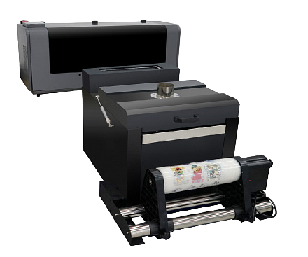
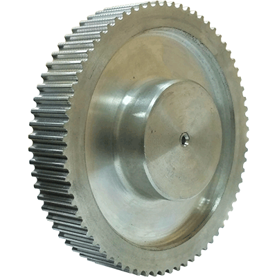
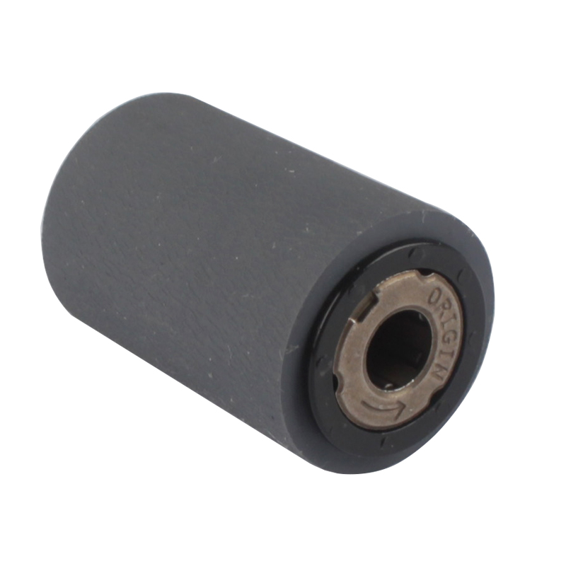

Программы для работы
Расходный материал
Необходимые
- Чернила CMYK+W
- ПЭТ плёнка
- Термоклей
Дополнительные
- Жидкость для чистки голов (растворитель чернил)
- Сухие салфетки
- Влажные салфетки
- Одноразовые перчатки
- Чистящие безворсовые палочки для обслуживания голов принтера
Запасные части
- Демпфер
- Трасса (Шланг для принтера)
- Зажим трубок СНПЧ
- Печатающая голова
- Циркуляционный разветвитель чернил
- Гибкий кабель-канал
- Чернильный фильтр
- Бак для чернил
- Силиконовая смазка
- Энкодерная лента
- Болтики
Модификации
- Установка вентиляции для DTF печи
Подготовка макета
Удаление лишних элементов
(обязательно изменение макета согласовывать с дизайнерами)
Проверка заливки
Попросить дизайнера исправить макет, если есть ошибки в нём. В данном случае непрозрачные отверстия в буквах
Экспорт изображения в PDF файл
- 1
- 1
- 1
- 1
Создание подложки в PhotoShop
- Выделение объекта CTRL + LBM
- Сжатие выделения 1-2 px (или провести каллибровку голов)
- Создание "Новый плашечный канал..."
- Сохранение в PDF файл
RIP
- Импорт файла для "риповки"
- Ожидание загрузки файла
- Выбор пресета "720x720"
- Выделение файла и запуск RIP
- Экспорт файла (расширение .prt)
Запуск печати в PrintExp
Обслуживание принтера
| Месяца => | 1 | 2 | 3 | 4 | 5 | 6 |
|---|---|---|---|---|---|---|
| Проверка шкивов и ремней | ||||||
| Чистка роликов подачи материала | ||||||
| Смазка направляющих рельс | ||||||
| Проверка капы | ||||||
| Проверка вайпера | ||||||
| Замена демферов | ||||||
| Замена фильтра тонкой очистки |
Подробнее о деталях и их местоположении
Шкив
Ролик подачи материала
Ошибки
Желтеет принт
Снизить температуру печи
Не запекается клей
Повысить температуру печи
Не запекается клей по краям листа
Держать лист по центру печи, подобрать оптимальную температуру
Не печатается макет из иcтории напечатанных
Проверить margin и наличие файла в папке